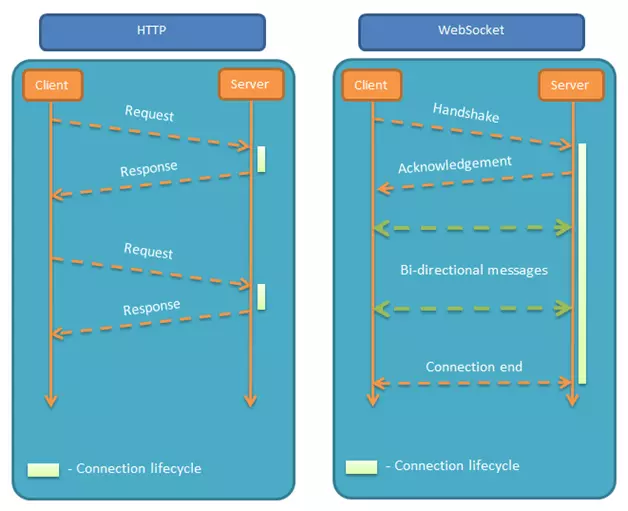

The WebSocket API is an advanced technology that makes it possible to open a two-way interactive communication session between the user’s browser and a server. With this API, you can send messages to a server and receive event-driven responses without having to poll the server for a reply. – introduction from MDN
WebSocket vs HTTP
The WebSocket Object
The WebSocket object provides the API for creating and managing a WebSocket connection to a server, as well as for sending and receiving data on the connection.
To construct a WebSocket, use the WebSocket() constructor.
1 | // Create WebSocket connection. |
WebSocket Events
- open
- message
- error
- close